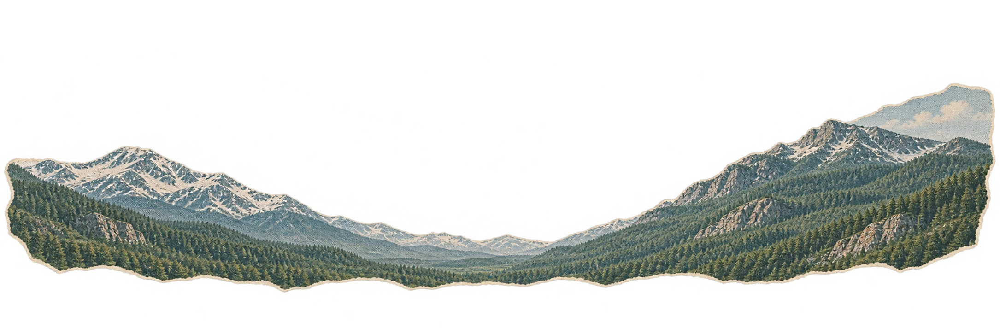
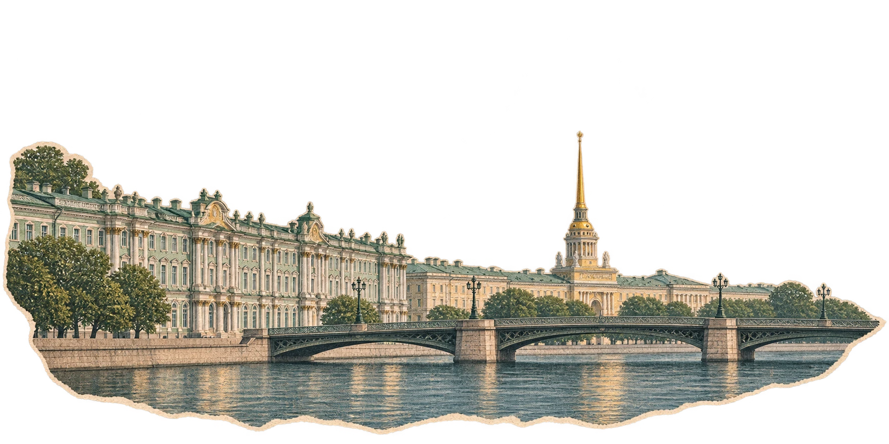
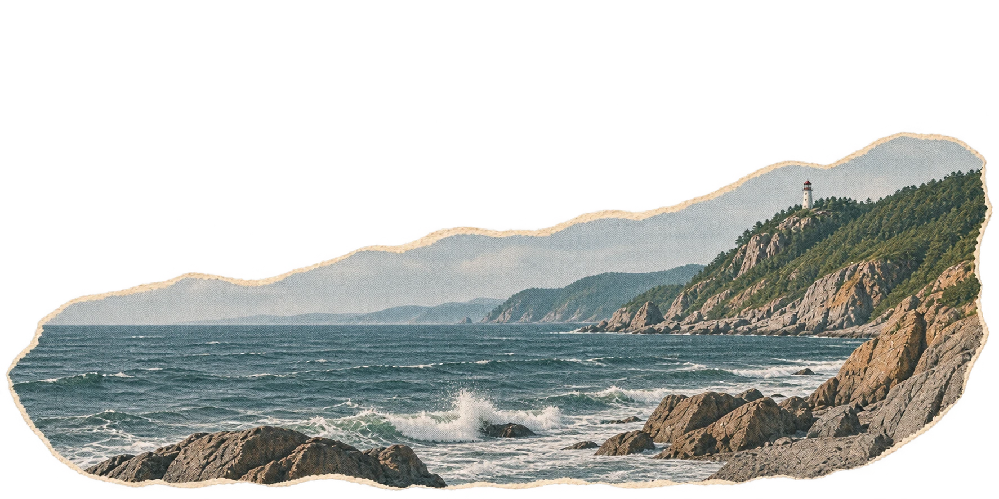
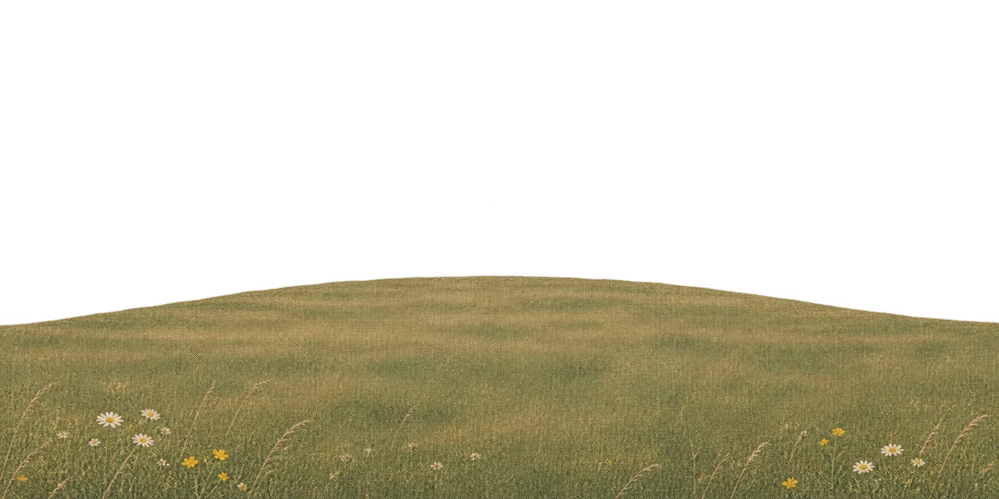
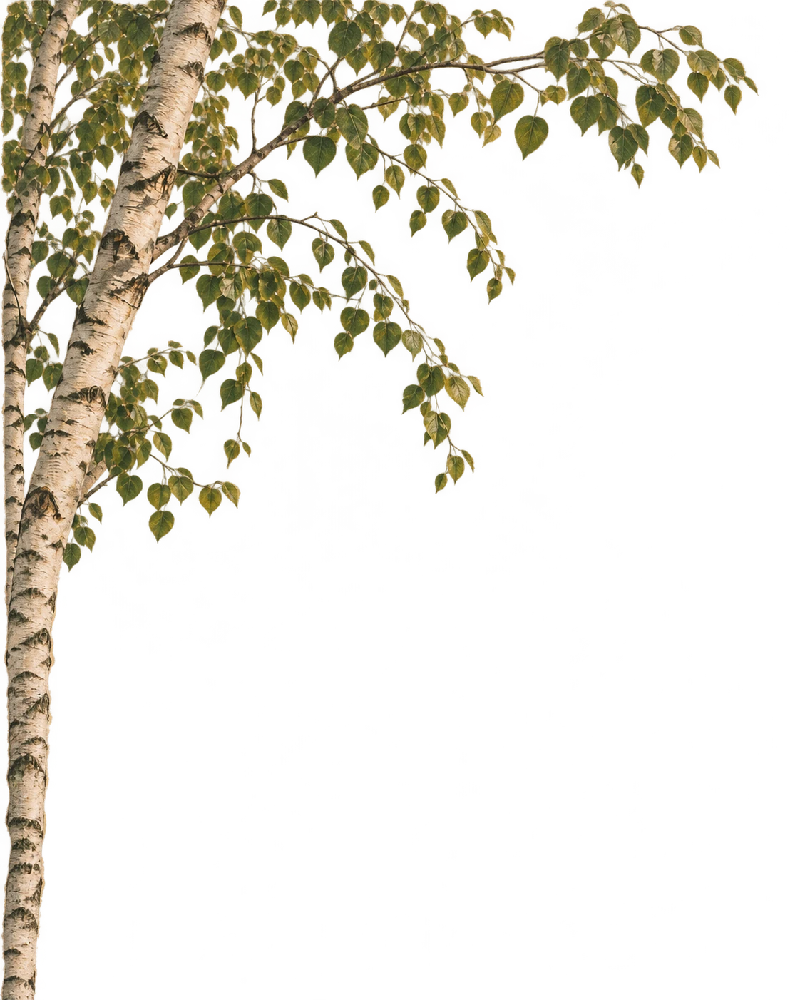
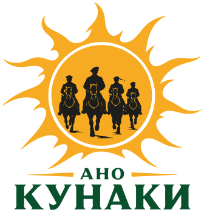
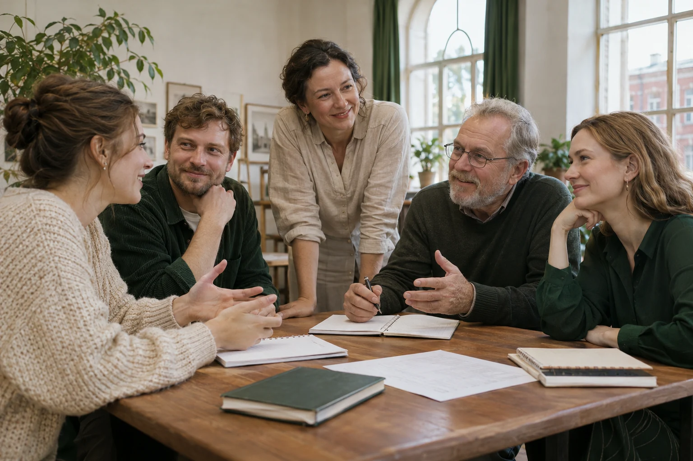

Помощь в ремонте и отделке актового зала детского дома в городе Покрове.





Люди,
культура,
поддержка
КУНАКИ — центр поддержки культурных и социальных инициатив. Объединяем людей, поддерживаем идеи и создаём возможности для реализации значимых проектов.
НАПРАВЛЕНИЯ ДЕЯТЕЛЬНОСТИ
Художественный коллаж, созданный с помощью ИИ
ЗНАКОМИМСЯ БЛИЖЕ

Иваново · с 2026 годаОрганизация зарегистрирована 24 августа
Всё начинается
с человека.
С его идеи, таланта и желания
что-то изменить.
«Кунаки» — центр поддержки культурных и социальных инициатив, объединяющий людей для реализации проектов, направленных на развитие общества, поддержку человека, сохранение культурных ценностей и создание новых возможностей через творчество, искусство и общественно значимую деятельность.
Мы верим, что настоящая сила заключается в людях, которыми мы себя окружаем, в доверии, взаимной поддержке, общих ценностях и способности действовать вместе.
Сила в команде.
Сила в единстве.
ДовериеПоддержкаСозидание
01 / МИССИЯСоединять людей и возможности
Помогать инициативам становиться значимыми общественными, творческими и социальными проектами.
02 / ЦЕЛЬПоддерживать человека
Развивать общество, сохранять культурные ценности и открывать новые возможности через творчество и общие дела.
03 / ПРИНЦИПЫДействовать на общих ценностях
Доверие, взаимная поддержка, общие ценности и способность действовать вместе.
НАША ФИЛОСОФИЯ
Сила в команде.
Сила в единстве.
Каждый человек обладает собственной силой. Но когда встречаются люди, объединённые общими ценностями и стремлением создавать что-то значимое, эта сила становится больше.
Мы верим в людей, в силу команды и в возможности, которые рождаются благодаря единству.
Наши проектыТОЧКИ ПРИЛОЖЕНИЯ СИЛ
Разные направления.
Одни ценности.
Поддерживаем то, что объединяет людей
и делает жизнь вокруг лучше.
ОТ ИДЕИ К ДЕЛУ
Наши проекты
Творческий проект, связанный с выступлениями перед детьми и взрослыми.
Творческие, музыкальные и кинематографические проекты. Открыты вашим предложениям.
Хотите узнать о текущих задачах или предложить помощь? Свяжитесь с командой — обсудим, что можно сделать вместе.
СОЗДАВАТЬ. ДЕЛИТЬСЯ. БЫТЬ УСЛЫШАННЫМ.
Творчество и культура
Слово, музыка и кино помогают говорить о важном, сохранять культурные ценности и находить единомышленников.
У разных историй —
свой голос.
Поэзия и авторское слово
Авторская инициатива«От сердца к сердцу без брони» — самостоятельный поэтический и творческий проект, связанный с выступлениями перед детьми и взрослыми.
Музыкальные проекты
В планахМузыкальные инициативы — одно из направлений, которые организация планирует представить. Открыты предложениям авторов и исполнителей.
Кино и медиа
В планахПланируемые кинематографические проекты и возможность объединить творческую команду. Если у вас есть замысел, давайте обсудим его вместе.
НАША ГЛАВНАЯ ЦЕННОСТЬ
Люди, которые
стоят за делом.
В центре наших инициатив — люди, их опыт и готовность действовать. Мы ценим доверие и общее понимание того, ради чего берёмся за дело.
Алексей Валерьевич ОвсянниковДиректор АНО «Кунаки»

Иллюстрация, созданная с помощью ИИ. Не фотография команды АНО.ОТКРЫТО И ПО СУЩЕСТВУ
Отчётность
и документы
Сведения об организации, её деятельности и проектах — чтобы знакомство начиналось с доверия.
Регистрационные сведения
АНО «ЦПКСИ «КУНАКИ»
- ИНН
- 3700039908
- КПП
- 370001001
- ОГРН
- 1263700003973
- Дата регистрации
- 24 августа 2026 года
- Юридический адрес
- 153003, Ивановская область, г. Иваново, ул. Зверева, д. 8
- Директор
- Овсянников Алексей Валерьевич
Устав и карточка организации
Официальные документы можно запросить по почте, указанной в контактах внизу страницы. Укажите, какой документ вам нужен.
Отчёты и результаты работы
Сведения о деятельности, текущих этапах инициатив и результатах работы можно запросить у команды. Расскажите, какой проект или период вас интересует.
СОТРУДНИЧЕСТВО И ПОДДЕРЖКА
Ваша идея.
Наша общая сила.
Открыты вашим предложениям.
Почта для связи — в контактах ниже.
01 /
Проекты и идеи
Обсуждаем инициативы, которые помогают людям и создают новые возможности.
02 /
Волонтёрство
Ценим готовность делиться временем, навыками и опытом.
03 /
Партнёрство
Объединяем усилия с организациями и единомышленниками ради общих дел.
МЫ НА СВЯЗИ
Начнём с разговора?
О людях, идеях и том,
что мы можем сделать вместе.
Электронная почтаkunaki-ano@mail.ru